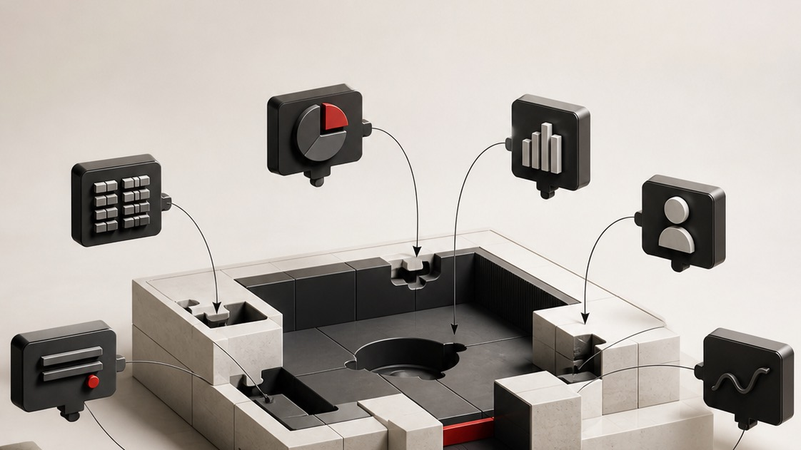
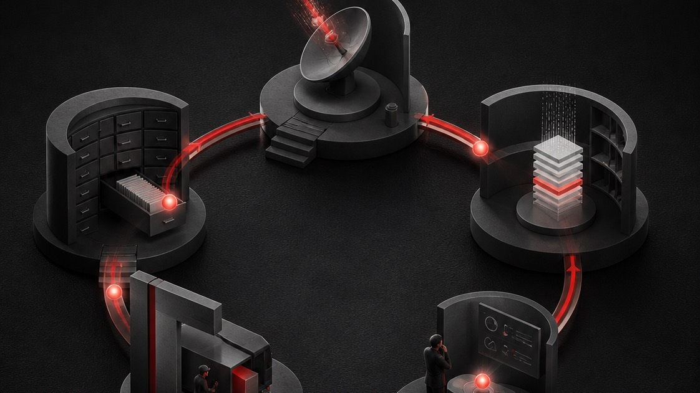

THE DETAILS
- WHEN
- Wednesday 26 August, 12:00 to 1:00pm AEST.
- WHERE
- Online. The link comes with your confirmation.
- COSTS
- Nothing.
- YOU NEED
- A laptop and an hour. You watch and type; you're never on camera.
- CAN'T MAKE IT
- Register anyway. Registrants get the recording.
"I have been working with AI for about three years. I explored building my own Mission Control or Chief of Staff, and it was too time consuming to resolve all the little glitches. Then I found Arek and his fully resolved, beautiful system, and his Do It With You approach. Best decision I've made all year."
You've built the tools. This is the operating system they run on.

Most people I talk to have already had a go at this. A proposal generator. Something that chews through call transcripts. A pricing sheet built with Claude at 11pm. Maybe a dashboard to hold the rest of it together.
They work. None of them know about each other. So you're still the bit in the middle, holding it together in your head, and every new thing you build starts from nothing.
That's not a discipline problem or a tooling problem. It's an architecture problem, and it's the whole of what this hour is about.
And if you have only ever used chat, you're in the same place by a different road. In a chat, every output is a dead end that you carry forward alone. It answers, then forgets, and you're the one who walks the answer to wherever it needs to go next. A system holds the business instead: every client, price, promise and standard, and the output lands somewhere and feeds the next piece of work.
Everything you've already built gets folded in.

This is usually the first question, so here's the answer before you ask it. Nothing you've made gets thrown away. The proposal tool, the transcript thing, the half-finished skill: they get folded in and they keep working, and they get better because they can finally see each other.
If you've spent months on this, you're further ahead than someone starting cold, not further behind.
THE HOUR
What I'll actually do.

I'll show you the system that runs my two businesses and explain how it's put together: where the source of truth sits, what has permission to do what, how a decision made in one place lands everywhere else, and which rules stop a non-deterministic thing from wrecking a real business.
HARTLEY ADVISORY
WHERE THINGS STAND
Two years as a client. Last brand film ran Q3. They went quiet after the Q1 proposal for the partner series.
OPEN ITEMS
You said you'd send the partner-series outline. Still sitting in drafts.
Their new GM hasn't seen your work yet.
TAKE THESE IN
- What's changed for the firm since the GM started?
- Is the partner series still a priority this year?
- Who needs to sign off, and by when?
Example of a call preparation. Names and details changed.
Then I'll answer questions for as long as we have.
Mine is a video business, so the nouns on screen are proposals, shoots and invoices. Yours might be engagement letters, open quotes or rosters. You're watching the architecture, not the industry.
Real system, real business. Client names and identifying details are changed on screen.
Who this is for.
People who have already tried. You've used chat properly, or had a go with the agentic tools, or built something that half works, or started and stopped a few times. What you have in common is not how technical you are. It's that none of it adds up to a system yet.
If you have never opened ChatGPT, this hour will move too fast to be useful. That's worth knowing before you give up a lunchtime.
From people who have built one.
"I came thinking I knew how to use AI and quickly saw how far off I was. What you unlocked was a whole way of thinking about it, and off the back of that I've built a system that actually runs the way my brain works and holds my whole business."
"Chat is simply not the right tool. It's like trying to build a deck with a screwdriver. For running a business it won't do."
"It only took 30-60 minutes for my brain to start to open to all the possibilities."
"It's like having an extra person on the team who knows the whole business. The best part is it sounds like us, not like a robot. We move faster and nothing slips through the cracks."
"Highly recommend it to anyone serious about getting AI working for them rather than just playing around with a chat box."
"While I understood and could appreciate the benefits of building AI into my workflow, Arek really unlocked how to connect it all together and make it work for me, not just with me."
Most of these are excerpts. The longer versions are on the testimonials page.
Straight answers.
- It's free. What's the catch?
There is a paid build. I work alongside you and you come out with your own, from $5,500 + GST, once. It gets one mention near the end and that's the whole pitch. The hour stands on its own without it. There's also a Melbourne version on Wednesday 14 and Thursday 15 October: two full days, twelve people in the room, $2,950 + GST. I'll say more about both on the day.
- Will I be on camera?
No. It's a one-way stream. You watch, and questions go through a box on the page. You can stay quiet the whole hour.
- Could I just build this myself?
You could, and plenty of people in the room will have started. The tools are the easy half. The architecture underneath, and the rules that decide what needs you and what doesn't, is what took me a year of running a real business on it. You're welcome to take what you see and build it yourself. Most people would rather understand it than spend two months finding it out.
- Do I need to be technical?
I'm a molecular biologist, not a programmer. Built by someone with a scientific brain, not a coding one, which is why it's shaped around clients, quotes and follow-ups rather than around code.
- Doesn't ChatGPT's new agent mode do this?
ChatGPT Work is real and worth trying. It runs inside their window, on their rules. What I'll show you lives in my own files, on my own machine, and any capable model can be pointed at it. The AI is rented and it gets better for everyone. The compounding is yours alone, because it learns how you work with every correction, and that cannot be bought at any price.
- What happens to what I write in the form?
The question about what you would point it at helps me shape the hour, and it's deleted after the session. It's not filed, scored or fed into a sequence, so describe the task rather than the client.
- What if I can't make it live?
Register anyway. Registrants get the recording.